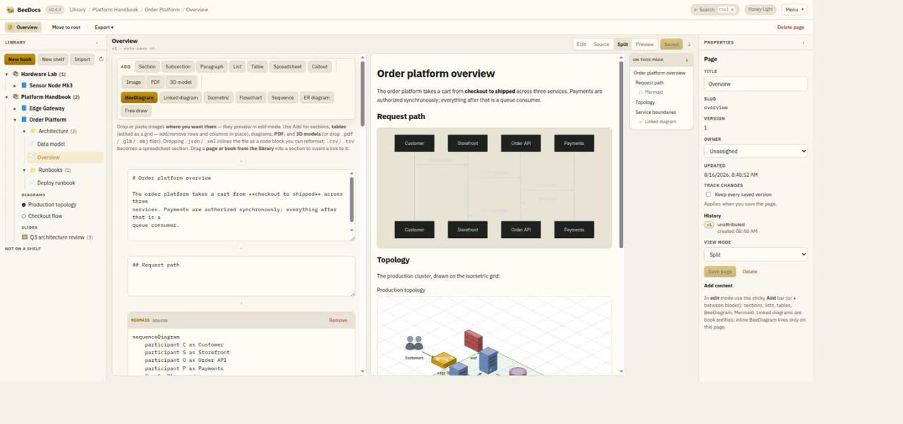
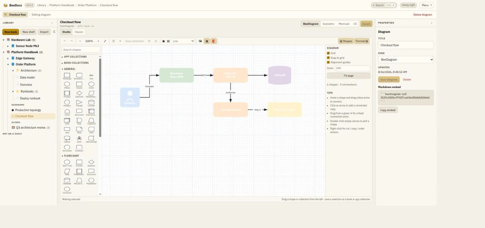
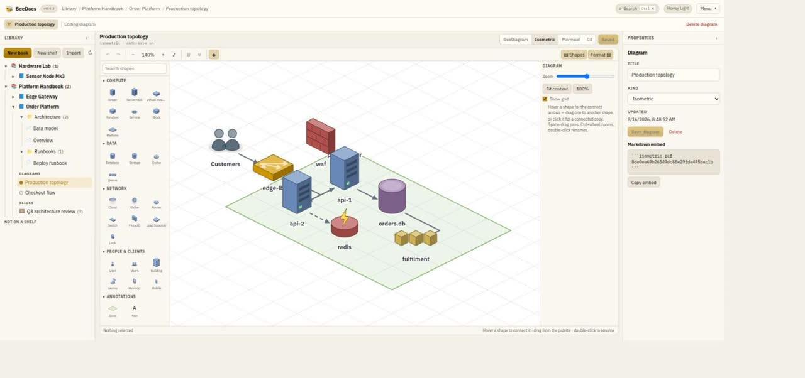
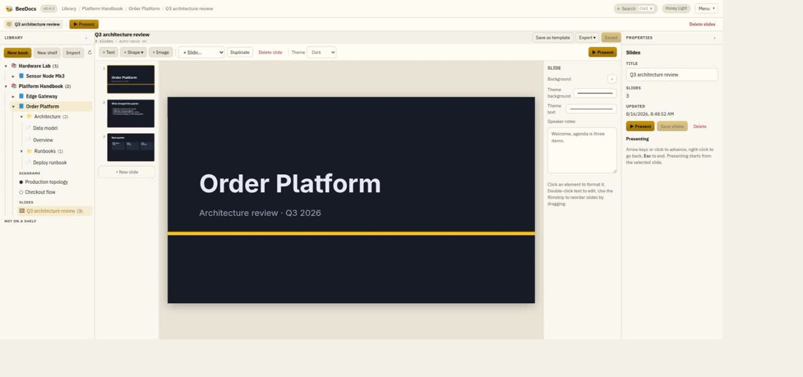
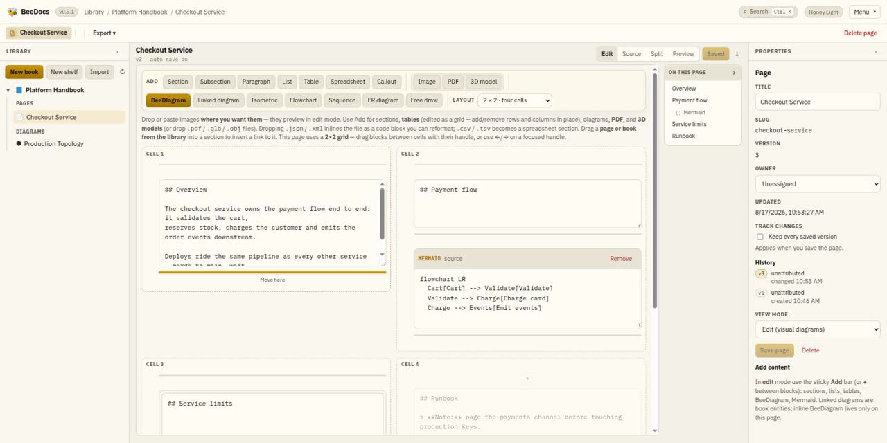
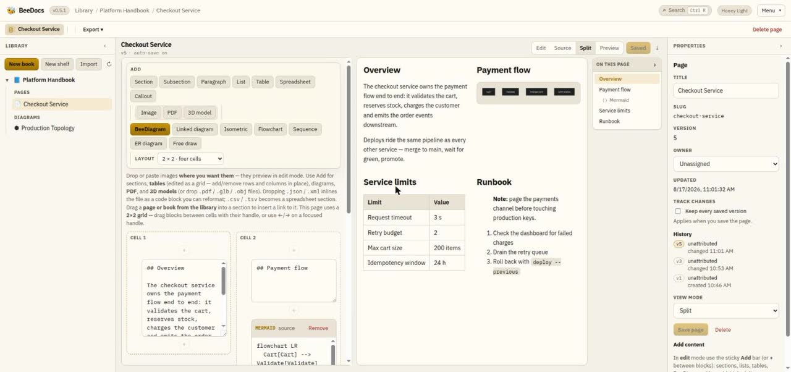
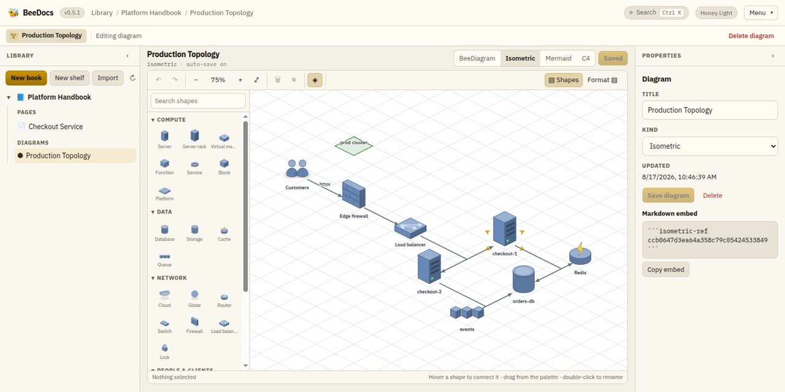

A library, not a wiki maze
Shelves hold books, books hold chapters and pages. Publish a shelf and it becomes a clean reader site of its own.
self-hosted · single container · SQLite inside
BeeDocs is a self-hosted platform for documenting software and hardware systems: a library of books and Markdown pages with a draw.io-class diagram studio, isometric architecture views and slide decks built in. It ships an MCP server too, so your AI agents write docs right next to you.
MIT license · REST API · MCP for agents · runs on Docker or K3S
in action
A lap around a real library — the same build you get from docker compose up, showing its own demo content.




new in v0.5 · grid pages
A page doesn't have to be one long column. Pick a grid — 2×1, 3×1, 2×2, 3×2 — and every section, diagram, table and image becomes a block you drag into a cell. The layout lives inside the page's own Markdown, so it survives exports, history and the API.


the library
Shelves hold books, books hold chapters and pages. Publish a shelf and it becomes a clean reader site of its own.
Mermaid, C4 and BeeDiagram fences render inline as you type. Autosave runs every 1.5 seconds; history keeps one revision per sitting, not per keystroke.
Arrange a page's sections in a 2×1, 3×1, 2×2 or 3×2 grid of cells and drag blocks between them. The layout is plain Markdown, so preview, exports and the reader site all render it.
Deck designer, full-screen presenter, reusable templates — and export to a real .pptx file that Google Slides opens natively.
SQLite FTS5 over every page, book and diagram label. Whoever wrote the row — UI, agent or import — it gets indexed. Ctrl+K opens it anywhere.
Three roles — admin, editor, viewer — with sessions and hardened password hashing. Auth is off by default and flips on without a migration.
Every page keeps a change log of who left it in what state. Owners can turn on full revision copies, with pruning they control.
diagrams
kind: beediagram
A draw.io-style editor: shape palette, infinite canvas, hover-to-connect arrows with 16 connection points, alignment guides, a format panel and Azure service stencils.
kind: isometric
Architecture on a 2:1 dimetric tile grid — racks, servers, clouds and zones hand-drawn from primitives, connectors snapped between tiles. The diagram above is one.
```mermaid
Text-first flowcharts, sequence diagrams and C4 context views inside ordinary Markdown fences, rendered live in the editor.
Every diagram is one JSON document. It looks identical in the editor, embedded in a page, and in the PDF and HTML exports.
the isometric editor, working
Built from scratch for BeeDocs — no third-party diagram library. Hover a shape for connect arrows, drag it to another tile and the connectors re-route, click a palette shape to place it, double-click to rename. Every step below is the real editor.

mcp server
BeeDocs ships an MCP server that wraps the whole API: create books, write pages, build BeeDiagrams and isometric views, assemble slide decks, search the library. Add a shape to the palette and a generated catalog carries it to your agents — no second edit.
Connect Claude Code, Cursor, VS Code or Claude Desktop over stdio or HTTP, with optional bearer-token auth in front.
connect an agent
# Claude Code
claude mcp add --transport http beedocs \
https://docs.your-domain.com/mcp
# or stdio, straight from the repo
claude mcp add beedocs -- dotnet run \
--project src/BeeDocs.Mcpself-host
A .NET 10 API serves the built React workspace, uploads and the database from a single process. SQLite is embedded — there is no database server to run, and a backup is one file.
up and running
git clone \
https://github.com/bartbeecoders/beedocs.git
cd beedocs
docker compose up --build
# → http://localhost:5080mit license
BeeDocs is open source under the MIT license — the whole thing, not an open core with the good parts held back. Every feature on this page ships in the same free build, and always will.
LICENSE
MIT License
Copyright (c) 2026 BeeCoders
Permission is hereby granted,
free of charge, to any person
obtaining a copy of this software …
to use, copy, modify, merge, publish,
distribute, sublicense, and/or sell
copies of the Software …
# the full text, verbatim
# github.com/bartbeecoders/beedocs